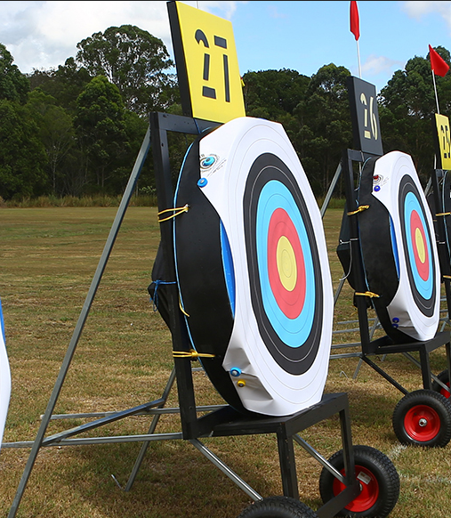
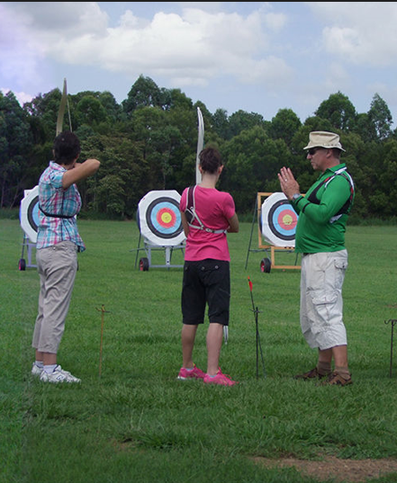
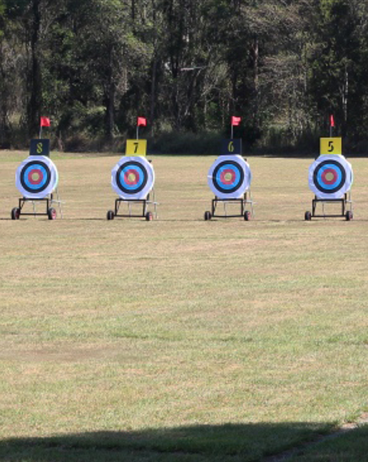
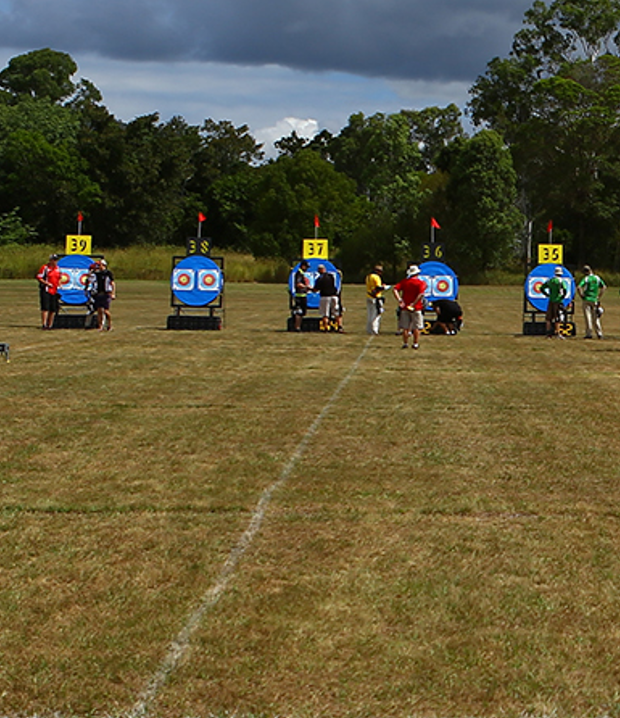
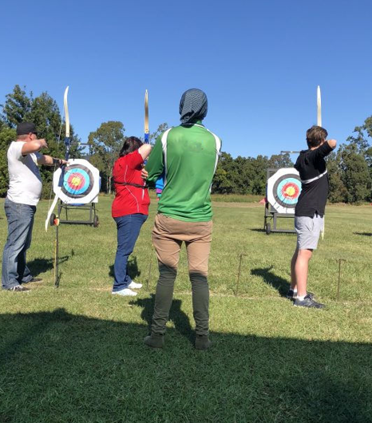
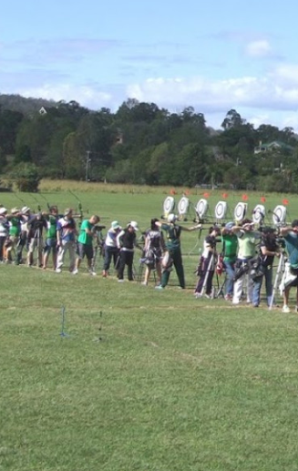

Level 1, Archery Instructors:
There are about 20 active Archery Instructors at the club.

Level 2, Coaches:
Jenny, Melissa, David, and Adrian.

Level 3, Coaches:
Jenny, Melissa, David, and Adrian.

Level 4, Club and Regional Coach:
Shelley

Level 5, Regional Coach:
David

Level 6, Club Coach:
Adrian